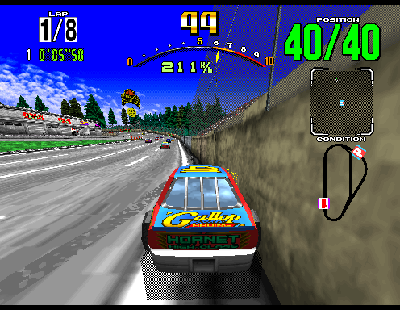
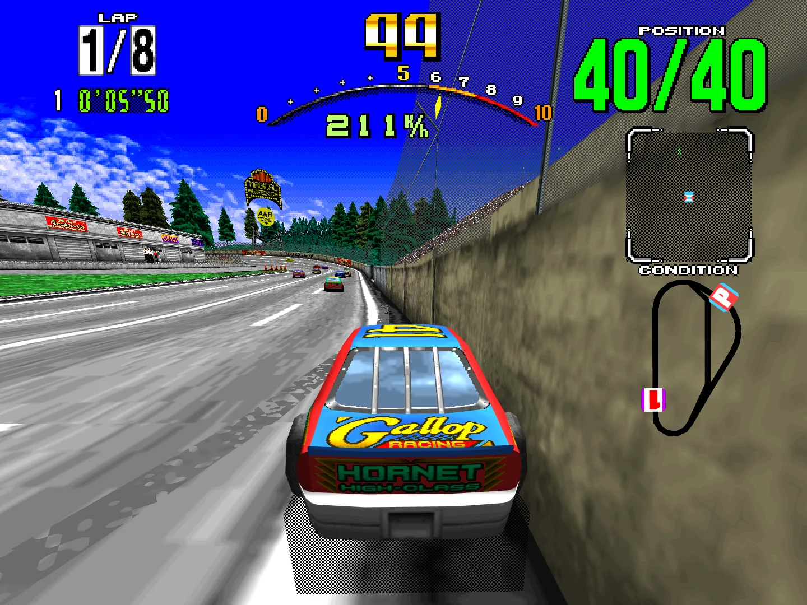
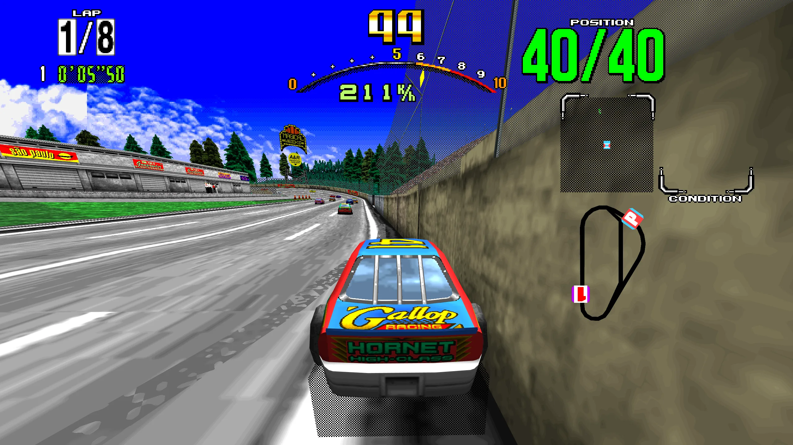
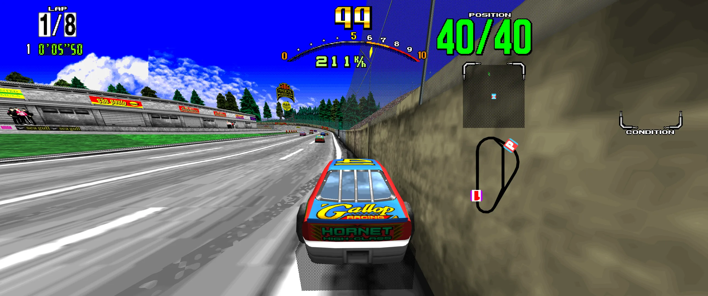
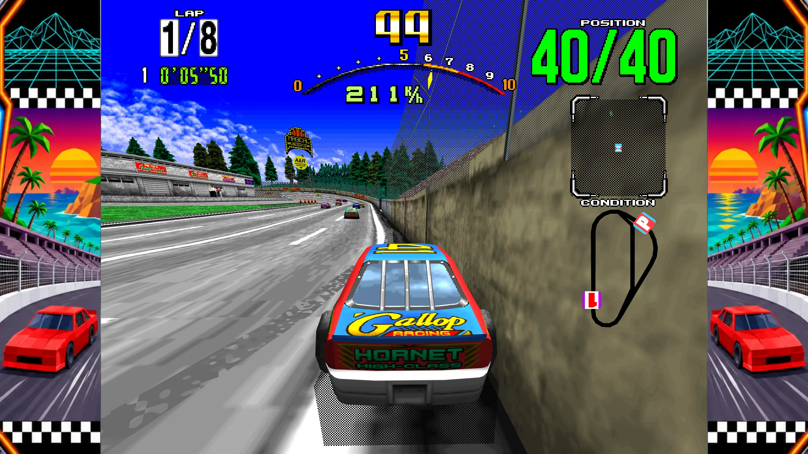
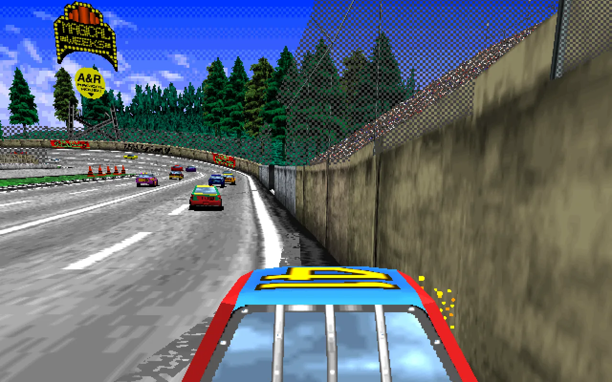
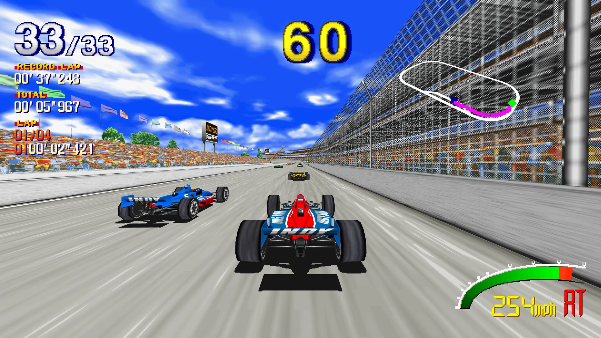
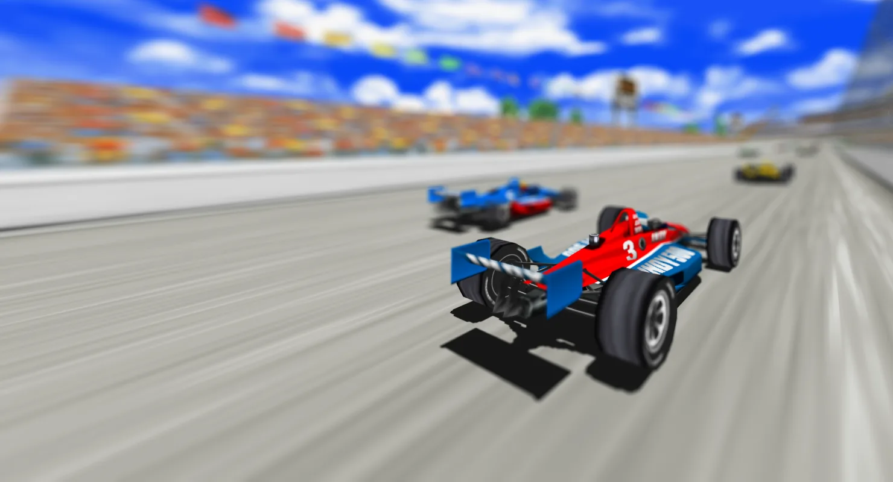
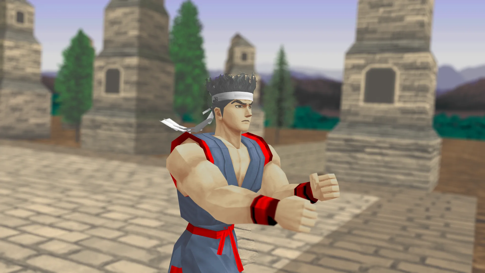

120Hz
Smooth motion
Smooth motion draws in-between frames for displays above 60 Hz by interpolating the game's own geometry. It adds one game frame of latency. Tested on a 120 Hz display.
Any resolution and any window shape from 4:3 to 32:9, six picture styles, smoother motion with less input lag, and a photo mode. Every upgrade is optional; Arcade original is the default.





* Bezels appear in 4:3 windows. HUD placement is set per game, and not every HUD is perfect yet.
Arcade original (the default), Sharp, Smooth modern, CRT, Comic and Custom. Choosing one applies it at once to the paused game, and Compare shows the original and your choice side by side.
The full style menu is in the native player; the browser build has presets. These shots are one frame of Sega Rally.
Smooth motion draws in-between frames for displays above 60 Hz by interpolating the game's own geometry. It adds one game frame of latency. Tested on a 120 Hz display.
Run-ahead runs a second copy of the machine one to three frames ahead, so the picture answers your input sooner. It only helps games with lag to hide, and it's in the native player only.
MSAA 4x, or 8x where the GPU supports it. The native player also has temporal anti-aliasing.

All three are opt-in. Timings in the docs were measured on one development machine.
F8 pauses the game and opens photo mode. Move a free camera around the paused moment, scrub back through the last ten seconds, add depth of field and motion blur, grade the colour, and save a PNG at up to 8K. Close it and the game carries on from the same frame, its state untouched.



A dock along the bottom edge holds the settings, one tab at a time, and is never in the photo. It works with a keyboard and mouse or a pad.
The free camera can only show what the game drew for its own view: turn it right round and the scene behind is usually empty. Photo mode is in the native player only. Photos go to a reModel folder in your Pictures folder.